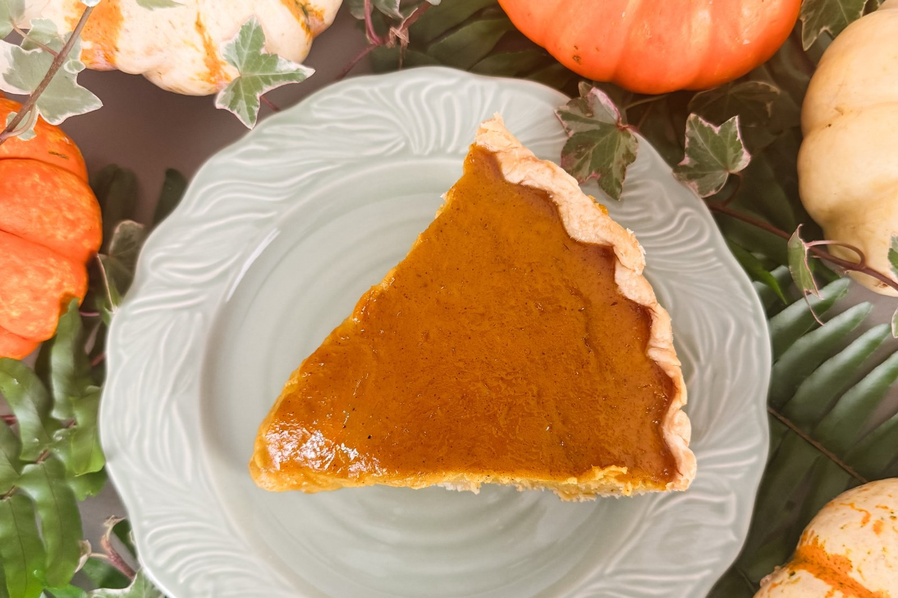

She’s the Goose

From the Oven · Autumn
Real roasted sugar pumpkin, nutty brown butter, maple and a silky spiced custard in an all-butter crust.
The pumpkin is roasted and drained here, not poured from a can, and that is what makes the custard silky. The crust is the House Pie Crust from the Basic Series: one disc, made and chilled ahead. The recipe makes two, so the other can go in the freezer for the next pie.
For the crust
For the roasted pumpkin custard
For the maple whipped cream (optional)
Roast the pumpkin. Heat the oven to 400°F. Halve the pumpkin, remove the seeds and place cut-side down on a parchment-lined baking sheet. Roast 40–55 minutes until tender. Cool, scoop out the flesh and purée until smooth. Drain in a cheesecloth-lined sieve 30–60 minutes without pressing hard. Measure 2 cups thick purée. If it is still watery, reduce it gently in a saucepan and cool.
Shape the crust. Roll one disc of the House Pie Crust into a 12-inch circle and ease it into a 9-inch pie plate without stretching. Fold the overhang under and crimp the edge so it stands a little above the rim. Freeze 30 minutes, until firm.
Blind-bake. Heat the oven to 400°F. Line the frozen crust with parchment, pressing it into the corners, and fill it to the top with pie weights or dried beans so they hold up the sides. Bake 20–25 minutes, until the edges are set and lightly golden. Lift out the weights and parchment and bake 5–10 minutes more, until the bottom looks dry. Cool slightly.
Brown the butter. Cook 2 tablespoons butter over medium heat, swirling, until golden and nutty. Remove from the heat and cool slightly.
Mix the custard. Lower the oven to 325°F. Whisk the eggs, yolk, brown sugar, maple, vanilla, salt and spices. Whisk in the cooled brown butter and the pumpkin purée, then gradually whisk in the cream and milk. For a silky finish, blend briefly without adding much air and pass through a fine sieve.
Bake. Pour into the prebaked crust. Bake at 325°F about 50–70 minutes, checking early, until the edges are set and the center has a gentle wobble (about 175–180°F in the center). Shield the crust edges if they brown too fast.
Cool and serve. Cool on a rack, then refrigerate at least 4 hours, preferably overnight. Serve with lightly sweetened whipped cream, or the maple whipped cream: whip the cream, maple and vanilla to soft peaks.
Fresh pumpkin varies in moisture. Thorough draining is what gives a smooth, sliceable custard.
If the sides of the crust slump during the blind bake, the dough was too warm going in. Give it the full 30 minutes in the freezer, and fill the weights right to the top.
Don’t bake until the center is completely firm. Pull it while it still has a gentle wobble; it finishes setting as it cools.
If your crusts are shallow, one batch of filling can be divided between two prebaked shallow crusts. Bake both at 325°F and begin checking at 25 minutes; they may take about 30–40 minutes. Judge doneness by the wobble, not the clock.